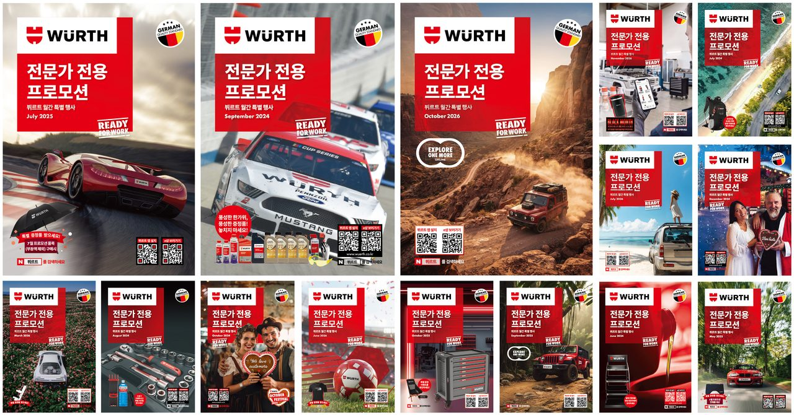

3일짜리 브로슈어를 반나절 작업으로 줄이는 중
AI가 웹에서 긁어 온 바코드는 절대 쓰지 않는다. 같은 품번이라도 국가마다 바코드가 달라서, 해외 사이트에 적힌 번호를 그대로 가져오면 틀리기 때문이다. 바코드와 가격은 한번 인쇄돼서 영업 현장에 깔리면 되돌릴 수가 없다. 월간 브로슈어 제작을 AI와 나눠 맡는 테스트를 하면서, 작업 시간을 줄이는 것보다 먼저 세워야 했던 기준이 이런 것들이었다.
이 브로슈어는 매달 만들고, 한 호를 마감하는 데 보통 3일이 걸렸다. 어느 날 대표이사가 제안했다. "반복되는 작업인데, 생산성을 높일 방법은 없을까요?"
업무 시간의 20%
솔직히 처음에는 무척 회의적이었다. 제품마다 레이아웃에서 따져야 할 변수가 워낙 많고, 어떤 제품에 힘을 더 주고 덜 줄지는 숙련된 사람이 판단할 영역이라고 봤기 때문이다. 일러스트레이터를 직접 다뤄서 인쇄용 해상도의 결과물을 만드는 일도 AI한테는 아직 이르다고 생각했다.
그런데 내가 이 일에 얼마만큼의 시간을 쓰고 있는지 캘린더 기록을 세어 보니 브로슈어 디자인과 발주에만 업무 시간의 약 20%가 들어가고 있었고, 화면용 PDF 변환에도 매달 30분에서 1시간이 더 붙었다. 1인 마컴 담당자한테 이 정도면 한 달 일정에서 꽤 큰 덩어리라, 회의적이라는 이유만으로 넘길 수는 없었다.
결국 목표를 세웠다. 물론 처음부터 완벽할 수는 없겠으나, 초기 완성도가 80% 수준에 그치더라도 3일 걸리던 작업을 하루 안쪽으로 줄여 보자는 것이었다.
매달 반복되는 3일
브로슈어는 A4 규격에 4단으로 접히는 8쪽짜리 인쇄물이다. 제품관리 담당자한테 엑셀 기획서를 넘겨받으면, 일러스트레이터 대지 위에 제품 사진과 이름, 가격, 바코드를 칸마다 하나씩 앉힌다. 원본 파일 크기만 1GB 안팎이다.
같은 포맷을 30개월 넘게 유지해 오다 보니, 매달 손으로 하는 작업 중에 단순 반복이 눈에 보였다. 자동화할 틈이 분명히 있겠다는 판단이었다.

동시에 절대 틀리면 안 되는 것도 있다. 가격과 바코드다.
AI 몫과 내 몫
일러스트레이터 작업을 AI한테 통째로 넘기는 방식은 사전 진단에서 이미 한계가 보였다. 3일 걸리던 작업이 2일 언저리로 줄어드는 정도였는데, 디자인 프로그램을 대신 눌러 주는 것만으로는 일의 구조가 바뀌지 않았기 때문이다.
그러면 무엇을 AI한테 맡기고 무엇을 내가 쥐고 있어야 할까? 공정을 쪼개서 정했다. 기획 엑셀을 읽어서 전체 초벌 시안을 앉히는 일, 표지 이미지를 만드는 일, 마지막 오탈자 검수는 AI한테 맡겼다. 매달 새로 기획하는 특집과 인포그래픽 제작, 그리고 지면의 인상을 좌우하는 간격과 여백을 다듬는 마무리는 사람의 눈이 필요한 일이라 내 몫으로 남겼다.
서체와 데이터 사용의 규칙도 세워 두었다. 최근 새로 제작된 그룹 서체를 각 항목의 규격에 맞춰 사용하고, 사내 데이터베이스에서 EAN-13 코드를 뽑아 만든 마스터 파일을 활용하여 AI가 25×6mm 크기의 바코드를 만든다. 한번은 제품 정보를 웹에서 자동으로 긁어 오게 했는데, 너무 빠르게 가져오려다가 사이트에서 접속을 차단당하기도 했다.
먼저 자리 잡은 화면용 마무리
인쇄용 브로슈어를 발주하고 나면, 영업 현장에서 화면으로 열어 볼 PDF를 따로 만든다. 지면 속 제품마다 주문 카트에 담기는 링크를 심어야 하는데, 전에는 이 링크를 내가 하나하나 손으로 걸었다.
지금은 작업 흐름이 어느 정도 잡혔다. 내가 인쇄용 원고를 화면용 색상(RGB)으로 바꾸고 바코드와 동영상 QR 위에 '재생 표시 아이콘'을 얹어 두면, AI가 제품 엑셀 목록과 대조해서 링크를 한꺼번에 넣고 파일 용량을 3~4MB 선으로 줄여 준다.
제품군별 카탈로그는 사정이 조금 다른 게, 프리미엄 수공구 라인만 모은 카탈로그나 종합 제품 카탈로그 등이 나눠져 있는데, 혼자 손으로 감당할 수 있는 분량이 아니었기 때문에 작년에 한 번은 인도에 있는 그룹 계열사에 외주로 맡겨 보기도 했다. 매달의 브로슈어 링크 작업을 AI가 맡고 있고, 카탈로그 작업은 성격이 같거나 더 단순해서 같은 방식으로 맡길 수 있겠다는 생각이 든다.
검수부터 시험했다
11월호는 내가 90% 이상 직접 작업했다. 새 자동화 체계를 아직 온전히 믿지 못했고, 방식을 새로 익히는 것보다 익숙한 손놀림으로 쳐내는 편이 빠르다고 느꼈기 때문이다. 그래도 일부 과정은 새 방식으로 시험해 봤다.
가장 먼저 효과를 확인한 곳은 오탈자 검수였다. 전에는 두 사람이 마주 앉아 글자를 하나하나 짚어 가며 확인했는데, 이번에는 AI한테 먼저 대조를 맡겼다. 노파심에 결과를 다시 확인해 보니 사람이 짚어 내던 것과 같아서, 이 단계만큼은 믿고 맡겨도 되겠다 싶었다.
조판용 원고 제작은 이미 나간 과월호 두 권으로 시험했다. 과월호의 기획 자료를 넣어 반자동으로 만들어 보고, 거기에 걸린 시간에 내 경험을 더해 전체 시간을 추산했더니 한 호당 4.5시간이라는 계산이 나왔다. 처음 목표였던 하루보다 짧은 반나절 수준이다. 상세 내역은 앞의 도식에 적어 둔 대로이고, 이 결과는 사내에도 공유했다.
마무리 단계에서 간격과 여백을 다듬는 30분은, 반자동화 결과물이 아직 내 조형 기준에 차지 않아서 손을 보느라 드는 시간이다. 내가 더 능숙해지든 AI가 더 배우든, 앞으로 더 줄어들 여지가 있는 구간이라고 본다.
12월호는 AI가 뼈대를 잡았다
12월호부터는 실제 월간 사이클에 이 방식을 넣었다. 뼈대는 AI가 만들고 나는 시각적인 보정만 더했는데, 작업량으로 치면 약 90%가 프롬프트와 지난 호 레퍼런스로 만들어진 셈이다. 11월호를 90% 이상 내 손으로 만들었던 것과 비율이 뒤집혔다.
걸린 시간은 어림잡아 6시간이다. 테스트에서 추산한 4.5시간보다는 아직 더 걸리지만, AI에게 더 학습시킬 것들이 남아 있어서 호를 거듭할수록 목표 숫자에 가까워질 것으로 본다. 사흘 가까이 손으로 붙들고 있던 때와 비교하면, AI가 움직이는 잠깐 동안 차 한 잔 마실 여유가 생긴 셈이다. 다만 아직은 검수하고 지시할 것이 많아서, 맡겨 놓고 다른 일을 할 단계는 아니다.
결과물은 디자이너 출신인 내 감성품질 기준으로 봐도 합격에 가까웠고, 부족한 10% 정도만 손으로 고쳤다. 경영진도 결과물을 직접 확인했고, 회의가 끝난 뒤에는 점심 자리를 따로 마련해 주었다. 망설이지 않고 빠르게 새로운 시도를 해 줘서 고맙다는 말도 들었다.
손이 비면 갈 곳
요즘은 간단한 시안 정도는 다른 부서에서도 AI를 써서 직접 뽑아낸다. 그렇게 시각물 제작에서 줄인 시간은 정비소를 직접 찾아가 현장을 더 이해하고, 우리 브랜드를 다양한 현장에 입히는 일에 쓰고자 한다.